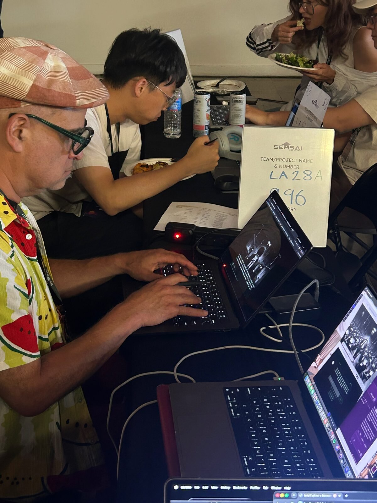
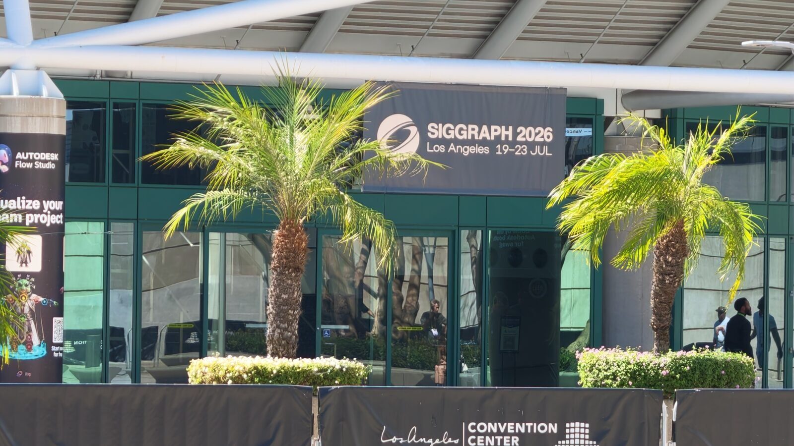
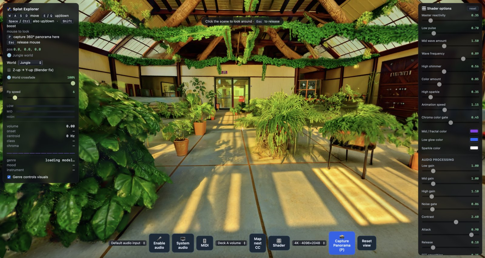
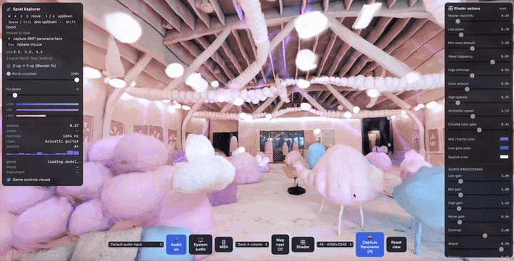

synth splat
A captured world that moves with music.

Gaussian splats are usually treated as records: a real place, captured once and then looked at. Synth splat treats a captured world as a performance surface instead, a scene that listens and changes with the person playing it.
Visual music has a long history, from Oskar Fischinger’s animated films to VJs mixing live in clubs. Most of it is abstract. I wanted to know what happens when the visuals are a real place, and the place itself starts to move with the sound.


In 48 hours at the Worlds in Action Hackathon, with Steph Ng and Nick Pudjarminta, we built a browser performance system with Spark.js, Meyda.js and an XGrids PortalCam. I mapped audio features to splat scale, opacity, motion and camera behavior, and shaped the interface so a performer could go from a prepared setlist to a live visual without opening a specialist 3D tool.

Instrument, not equalizer
The first mappings were easy to read but crowded. When every sound moved everything, the world felt like an equalizer. It started to feel like an instrument once each musical feature had its own spatial job, and the camera was allowed to answer more slowly than the surface, so the world breathes instead of twitching.

Sound becomes something you compose with while you author the world, not an effect added at export. The next version would let performers compose and preview their own mappings, and carry a captured world from editing to performance without rebuilding it in a game engine.
Live build ↗ · Video ↗ · GitHub ↗ · Devpost ↗ · World Labs showcase ↗